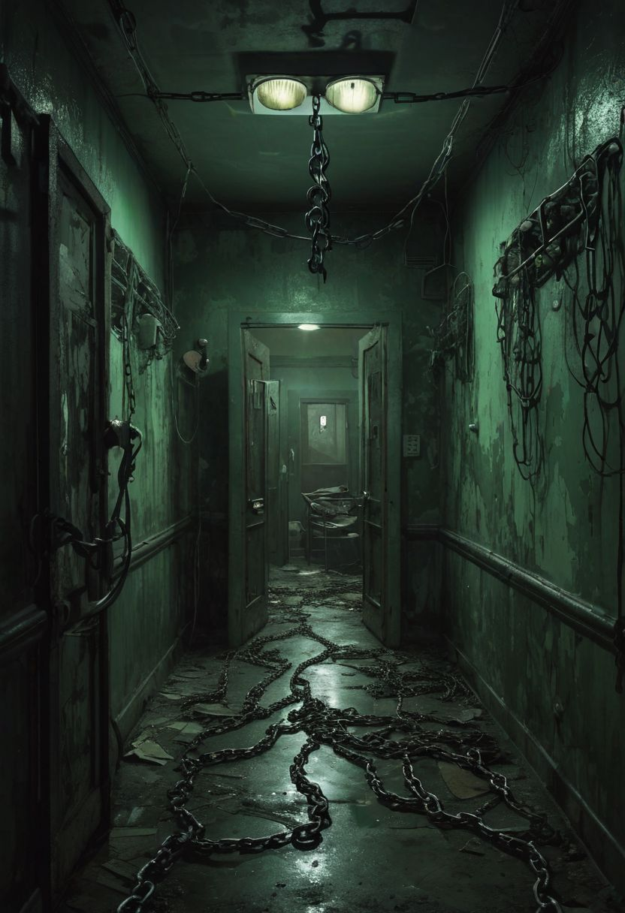

(Teda to jsem tu asi už dlouho nebyl, trochu se mi to tady nezdá, ale však vpohodě Fixera znám dlouho) "Fixere, že by sis to tu dal trochu dokupy? Ježiš tady to vypadá hrozně. Já bych pro tebe měl taky misi a to konečně začít uklízet"